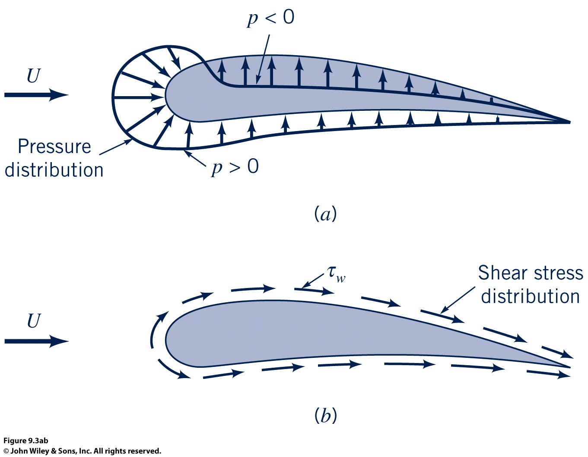
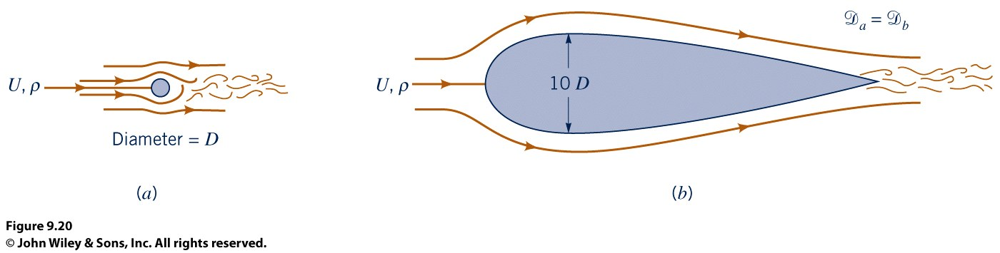
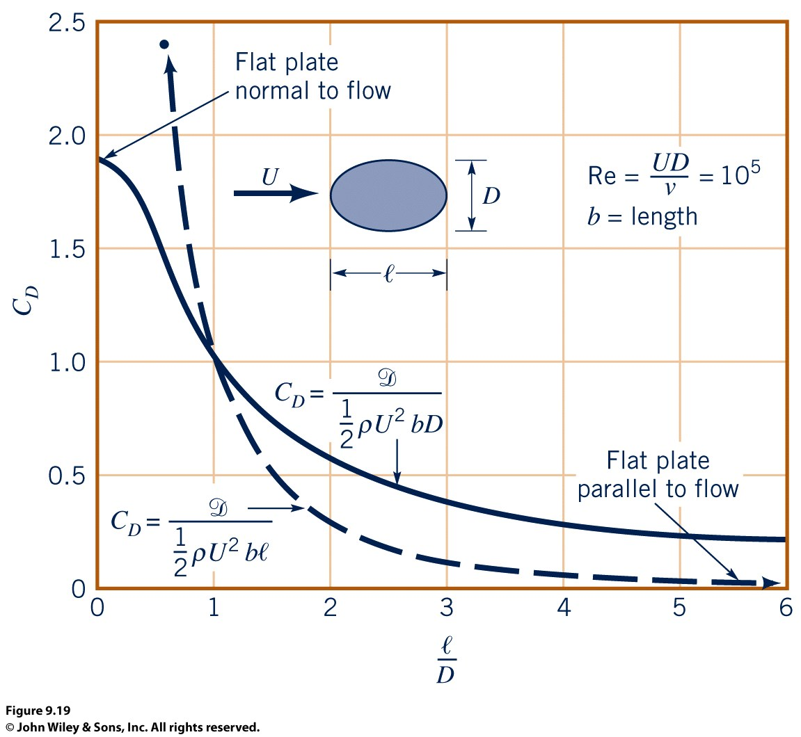

True or False: A 2D inviscid flow around any body shape has zero drag, even if the flow is unsymmetric and even if lift is generated.
Computation of Drag

Integration works well for skin friction drag, but less so for pressure drag (because of subtractive cancellations). Far-field methods are often more accurate for pressure drag and lift-dependent drag.
Factors that affect drag
Shape

What reference area should we use?

Reynolds Number
For low Reynolds number flows, streamlining can have the opposite affect.
Higher Reynolds numbers often involves tradeoffs in skin friction and pressure drag depending on streamlined vs blunt bodies.
Surface Roughness
Surface roughness affects transition and wall shear stress